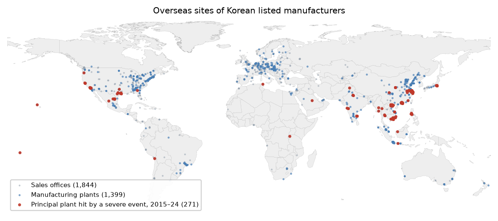
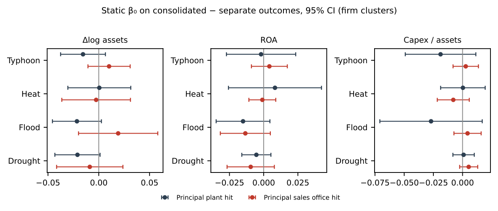

Where Imported Climate Risk Stops
How far a flood, drought or heatwave abroad travels into a Korean manufacturer’s accounts, what each null result rules out, and why national-average exposure data misstate what plants actually face
한국어판 — 수입된 기후 리스크는 어디에서 멈추는가
Plant and sales-office coordinates come from the subsidiary tables of listed manufacturers’ annual reports — the 2024 filings, with 2022 addresses for plants that had left by then — and daily ERA5 and ERA5-Land weather is evaluated at each site over 2015–2024. The establishment panel is the Mining and Manufacturing Survey, 2002–2024, in 21 usable survey years.
How far does a climate shock abroad travel into a Korean manufacturer’s accounts?
Physical climate risk realised abroad reaches a manufacturing economy in two ways. Its firms buy intermediate inputs from countries that are getting hotter, drier and more frequently flooded, and they own plants in those same countries. Supervisors treat both as channels through which foreign disasters could impair domestic balance sheets, and both are now written into stress-testing frameworks.
Whether either channel operates at a magnitude that matters is an empirical question, and answering it requires measuring exposure where the shock actually lands and then following it outward, one step at a time. This study does that for Korean manufacturing over 2015–2024, using geocoded subsidiary disclosures, daily reanalysis weather, international input–output tables, customs records and establishment microdata. The clearest finding is that the shock reaches the accounts and stops there: a severe flood or drought at a firm’s principal overseas plant leaves consolidated asset growth about two percentage points below the parent’s separate-statement growth, and moves nothing else.
Headline figures
| Item | Value |
|---|---|
| Overseas plants geocoded | 1,399 |
| Consolidated asset growth after a severe flood, against separate | −2.15 points |
| Profitability, capital expenditure and plant survival | No effect |
| Capital expenditure, minimum detectable effect | 0.18σ |
| Input bill after a one-σ drought in an industry’s largest foreign origin | 0.22% |
| Capital misallocation ruled out above | 2% of dispersion |
| National averages overstate plant heat in Thailand by | 3.6× |
1. Two channels, and only one can be measured where the shock lands
The trade channel is built from the Asian Development Bank’s multi-region input–output tables, which trace the value added embodied in Korean manufacturing output back to its country of origin. Foreign value added accounts for roughly a third of that output — 28 to 41 percent depending on the year, and 32.8 percent on the basis used in the dilution calculation below — and within the foreign component the largest single origin averages 23.5 percent across industries. Hazards in supplier economies are then weighted by each origin’s share of an industry’s foreign value added, lagged one year so the weights are fixed before the weather is known and renormalised to sum to one, so that the measure is the average risk of an industry’s foreign suppliers rather than a quantity that grows mechanically with how much the industry sources abroad. The resolution of this measure is the country-year, and that is its principal limitation.
For the ownership channel the resolution can be much finer, because Korean listed firms disclose the address of every consolidated subsidiary. From the annual reports of 2,240 listed manufacturers, subsidiaries whose stated business indicates production and whose address lies outside Korea yield 2,269 records with 1,859 distinct addresses.
Geocoding them is harder than it looks, and the difficulty is instructive about what disclosure data can support. Submitting the raw address strings to a gazetteer resolves 48 percent to city level or better, and the failures are not random: Korean filings render Chinese and Vietnamese place names in Korean transliteration, and industrial-park names that are locally canonical are absent from open gazetteers. A transliteration dictionary, sliding-window queries over address tokens, and a mapping of recurring park names to their host cities raise the rate to 92 percent on a 200-address development sample and 73 percent across all addresses.
Two classes of apparent successes mattered more than the failures, because they are silent. Ninety-six records carry romanised Korean addresses that the industry filter missed — the gazetteer resolves them correctly, but to Korea. Another 96 resolve to a country that contradicts a country name stated in the address itself: an address reading only “U.S.A” matching a street of that name in the Philippines, a Vietnamese address matching a building in Canada. Both classes were dropped.

Daily ERA5-Land temperature and ERA5 precipitation and wind are then evaluated at every site. A validation against the Copernicus archive for the Chinese sites returns a correlation of 1.000 and a root-mean-square difference of 0.03°C. Tropical cyclone exposure is built separately, from the 2,775 IBTrACS storms that reached tropical-storm strength — 34 knots or more — between 1995 and 2025, a plant counting as exposed when a track point passes within a set radius. Its geography is itself a check on the coordinates: exposure rates of 79 percent in the Philippines and 78 percent in Japan, against 34 percent in China, 0.3 percent in near-equatorial Indonesia and zero in inland Europe, reproduce cyclone climatology without tuning.
2. National averages describe territory, not production
Having both a country-year and a plant-coordinate measure of the same hazards makes it possible to ask how much the country-year convention misstates what firms actually face. The two disagree systematically, and in opposite directions for heat and for rain.
| Country | Plants | Days >35°C, plant | Days >35°C, national | Rx5day (mm), plant | Rx5day (mm), national |
|---|---|---|---|---|---|
| China | 434 | 5.8 | 7.0 | 145 | 59 |
| United States | 228 | 9.9 | 14.6 | 94 | 45 |
| Vietnam | 194 | 16.5 | 14.2 | 169 | 135 |
| India | 78 | 74.7 | 81.1 | 173 | 132 |
| Brazil | 19 | 7.7 | 32.5 | 116 | 90 |
| Thailand | 15 | 14.3 | 51.4 | 124 | 113 |
National averages overstate extreme heat where Korean plants cluster in the temperate or coastal parts of a hot country — by a factor of 3.6 in Thailand, where plants sit around Bangkok and the eastern seaboard rather than the interior, and 4.2 in Brazil. Where plants instead sit in the hotter part of the country, as in Vietnam, the national average understates the heat they face. And they understate extreme rainfall wherever plants sit on the wet coast of a country with a dry interior: China’s national five-day maximum is 59 millimetres against 145 at its plants, and the United States’ 45 against 94.
The discrepancy is not noise. It is the geography of where production is, and any exposure measure built from country-year data inherits it — including the trade channel of this study. For that channel the bias works against finding an effect on heat and towards finding one on flood. The plant-level results, measured at the coordinates themselves, are free of it, which is why they carry more weight than their aggregate counterparts. Supervisory frameworks that assign foreign physical risk from country-year data are assigning the wrong hazards to the wrong firms, and the direction of the error differs by hazard.
3. Damage reaches the consolidated balance sheet and stops there
The ownership-channel design compares a firm’s consolidated accounts, which include overseas subsidiaries, with its separate accounts, which exclude them. A shock at an overseas plant should move the first and not the second.
One pattern stands out. After a severe flood or drought at the principal plant, consolidated asset growth is about two percentage points lower than separate-statement growth. The components have the sign an overseas effect requires: consolidated growth falls and separate growth does not.
| Event at principal plant | Δlog assets | ROA | Capex / lagged assets | Events |
|---|---|---|---|---|
| Flood | −0.0215 (0.04) | −0.0151 (0.07) | −0.0270 (0.08) | 119 |
| Drought | −0.0210 (0.05) | −0.0053 (0.29) | +0.0009 (0.83) | 152 |
| Typhoon | −0.0155 (0.12) | −0.0019 (0.89) | −0.0188 (0.13) | 183 |
| Heat | +0.0005 (0.97) | +0.0083 (0.88) | +0.0003 (0.98) | 192 |
| Typhoon ∩ flood | −0.0398 (0.09) | −0.0389 (0.07) | −0.0579 (0.22) | 64 |
For flood and drought — the two hazards that move the difference — the separate-statement coefficients are small, positive and insignificant, at +0.017 and +0.001 on asset growth, while the consolidated components are negative. That contrast is the numerical basis for reading the difference as an overseas effect rather than a parent-side shock.

This is reported as a trace rather than a finding, for three reasons stated in the paper. Of 375 coefficients in the full event-study table, 24 reach five percent against 18.8 expected under the null, and none survives a Benjamini–Hochberg correction at q = 0.05. The drought pre-trend is as negative as the event coefficient. And the compound typhoon-and-flood indicator, which carries the largest coefficients in the table, has a significant pre-trend in revenue. Only the flood pattern is clean.
What the shock does not do is better identified than what it does. If a two-percent decline in consolidated asset growth reflected lost production it should show in profitability; if it reflected a decision to invest less at the damaged site it should show in capital expenditure; if it reflected abandonment it should show in plant exit. It shows in none of them.
Profitability. Pooling all four hazards gives a consolidated-minus-separate coefficient of −0.0005 (p = 0.96). Among the four single hazards the largest estimate is the flood coefficient of −0.015 (p = 0.07), and it appears with the same magnitude when the event is at a sales office rather than a plant, so it is not a production effect.
Capital expenditure. No hazard moves it at conventional levels. Drought is a precisely estimated zero — +0.001 (p = 0.83), with a minimum detectable effect of 0.18 standard deviations — and the largest coefficient, flood at −0.027, is significant only at ten percent and does not survive the correction applied to the table. What does not respond is the investment decision itself, rather than the book value that accumulates from it.
Plant survival. Among the 1,189 plants with exposure listed in the 2022 filings, 12.8 percent of those hit by a severe event in 2022 had disappeared from the 2024 filings, against a baseline disappearance rate of about 15 percent — so the raw comparison runs, if anything, in the hit plants’ favour. The regression estimates are no more informative in either direction: +1.8 percentage points with host-country fixed effects (p = 0.65), and −0.3 points once parent fixed effects are added (p = 0.96). The design would detect only a doubling of the exit rate, so this is the loosest bound in the ladder.
Taken together, the trace on consolidated assets is a write-down: damage that the accounts record and that the firm neither loses money over, responds to with investment, nor walks away from.
4. Three placebos separate three confounds that usually travel together
Earthquakes destroy productive capacity exactly as storms do but have nothing to do with climate. Consolidated statements include overseas subsidiaries while separate statements exclude them. Sales offices sit in the same countries as plants but produce nothing. The first comparison is run on the trade channel, where the outcome is capital misallocation; the second and third on the ownership channel, where the outcome is the firm’s accounts.
| Comparison | Confound it removes | Result |
|---|---|---|
| Earthquakes vs. climate hazards (trade channel) | Any effect of disaster exposure as such | Null at equal precision: +0.017, bootstrap p = 0.64, at 0.28σ |
| Consolidated vs. separate statements | Parent-side shocks correlated with plant location | Signal in consolidated, not separate |
| Plants vs. sales offices | Any “overseas presence” effect unrelated to production | Null at sales offices; typhoon at equal power |

The asset-growth trace passes the second test. The nulls on profits and investment pass all three.
5. Through the trade channel the shock arrives as a fifth of a percent
The qualitative claim that sourcing is diversified, so shocks are diluted, leaves the quantitative question unanswered. Every term in the following calculation is estimated rather than assumed.
Foreign value added is 32.8 percent of Korean manufacturing gross output. Within that foreign component the largest single origin averages 23.5 percent across industries. And a one standard deviation increase in a partner country’s drought exposure reduces Korean imports from it by 2.8 percent. Whether that decline reflects supply disruption or a contraction in the partner economy does not matter for the arithmetic: either way it is the reduction in inputs Korean industry actually experiences. The three magnitudes multiply:
\[0.328 \times 0.235 \times 0.0284 = 0.22 \text{ percent}.\]

Suppose instead, counterfactually, that every foreign supplier were struck simultaneously by a one standard deviation drought. Dropping the concentration term gives 0.93 percent. Even that upper bound leaves the input bill essentially unmoved.
The sourcing structure behind the dilution is visible directly in customs records linked to the business register. The value-weighted average number of partner countries is between 18 and 23 in five of seven industry groups and 13.1 in a sixth, and firms trading with ten or more partners account for roughly 75 percent of manufacturing imports. One industry departs sharply: textiles and leather averages 8.5 partners, with a fifth of its imports coming from single-partner firms.
The natural alternative account — that firms notice climate stress and re-source, as Pankratz and Schiller (2024) find of supplier relationships and Blaum, Esposito and Heise (2026) of US manufacturers’ sourcing — is testable here and fails. Trade with drought-stressed countries does fall, but imports and exports fall by the same amount, which is the signature of a contraction in the partner economy rather than of reallocation by Korean buyers. For the other hazards neither direction moves at all.
| Hazard | Imports | Exports | Import/export ratio | MDE (ratio) |
|---|---|---|---|---|
| Drought | −0.0284 (0.027) | −0.0282 (0.010) | −0.0008 (0.961) | 0.017 |
| Heat >35°C | −0.0064 (0.605) | −0.0072 (0.495) | +0.0010 (0.909) | 0.011 |
| Flood | +0.0006 (0.976) | +0.0002 (0.992) | −0.0010 (0.953) | 0.021 |
One import-side pattern survives. Heat reduces the number of Korean firms importing from a stressed partner by 0.67 percent without reducing the value imported and without moving exports, which implies consolidation among larger importers rather than reallocation across countries. The paper reports it and builds nothing on it.
Absorption here is a property of how sourcing is organised, not of how firms respond. A firm drawing on twenty origins has little reason to act, precisely because a disaster in any one of them moves a small share of its input bill.
6. Most hazards are precise nulls, and flood is the exception
A null is worth only the bound it carries. Minimum detectable effects — the smallest coefficient the design would reject against, at five percent significance and eighty percent power — vary by a factor of seven across hazards, so a single summary figure would misrepresent the evidence.
| Hazard measure | MDE (σ of outcome) | Verdict |
|---|---|---|
| Maximum wind speed | 0.07 | precise null |
| Drought events | 0.10 | precise null |
| Storm count, typhoon count | 0.11 | see below |
| Drought, consecutive dry days | 0.12 | precise null |
| Power dissipation index, ACE | 0.12 | precise null |
| Heat, days >40°C | 0.20 | effect found |
| Flood events | 0.26 | moderate |
| Heat, days >35°C | 0.27 | effect found |
| Flood, days precip. >20 mm | 0.44 | weak |
| Flood, max. 5-day precipitation | 0.49 | weak |
The precipitation-based flood measures are the one place the table licenses no conclusion — 0.44σ and 0.49σ, against 0.26σ for the measure built from counts of realised flood disasters — and since floods are the hazard most often assumed to disrupt supply chains, the paper pursues them. The imprecision turns out to be mechanical and remediable: essentially all of the inflation in the clustered standard error comes from coke and refined petroleum, the industry whose exposure measure covers the smallest share of actual sourcing. Excluding it cuts the flood standard error from 0.049 to 0.021 and the minimum detectable effect from 0.49σ to 0.25σ — from roughly ten percent of the dispersion to 4.2 percent — with the point estimate still indistinguishable from zero. A second and independent correction, replacing the precipitation proxy with the disaster counts on the full sample, lands at 0.26σ. That two different corrections converge is more reassuring than either alone, and the paper nonetheless keeps the conservative 0.49σ in its headline bound.

The storm measures are the paper’s most instructive non-finding. Lined up by how heavily they weight intensity — a raw count treats all storms alike, a typhoon count applies a threshold, maximum wind takes the peak, and the accumulated-energy and dissipation indices weight by V² and V³ — the bootstrap p-values rise monotonically along that ordering: 0.019, 0.145, 0.320, 0.479, 0.553.
If wind damage were transmitting to Korean capital allocation, the gradient would run the other way: damage scales with dissipated power, so the V³ measure should carry the signal. The reverse is observed. The measure with no intensity information is significant at conventional levels — though not after correction for the nineteen hazard measures reported — with a negative sign that no disruption mechanism predicts, and the measure that best represents damage is the weakest in the table. The reader who suspects a strengthening cyclone could damage a supplier without producing a flood can be answered directly: that channel is measured at the intensity where damage occurs, and an effect above roughly a tenth of a standard deviation is ruled out.
7. Extreme heat is where the evidence divides
Heat produces the largest coefficients in the table and the only significant ones with the sign a disruption channel predicts: +0.069 for days above 35°C and +0.053 for days above 40°C, per standard deviation of exposure. Most point estimates in the table are negative, and the two positive flood coefficients are indistinguishable from zero. The heat coefficients deserve scrutiny rather than either dismissal or acceptance, and they pass three filters and fail three.
They pass. Under a multiple-testing correction defined at the level of hazards — seven families rather than each individual measure — both clear the Bonferroni and Benjamini–Hochberg thresholds. Defined instead at the level of all nineteen individual measures, neither clears: the 40°C estimate fails Bonferroni at p = 0.003 against a threshold of 0.0026, the 35°C estimate at p = 0.007, and Benjamini–Hochberg at a five percent false discovery rate rejects nothing. The paper reports both answers rather than the more favourable one, and rests the claim on neither. The threshold measures do enter positively on all three outcome variables, with p-values between 0.021 and 0.105 — though two other heat measures fail to cooperate, and the paper says so: the annual maximum temperature is insignificant (p = 0.120) and the EM-DAT extreme-temperature event count carries the opposite sign (−0.026, p = 0.325), so the result rests on the two reanalysis threshold counts alone. And the geophysical placebo holds: earthquake exposure, constructed identically, gives +0.017 with a bootstrap p of 0.642, at a precision of 0.28σ against the heat measure’s 0.27σ. It has the power to find an effect of the size heat produces, and finds nothing.
They fail. Three checks cut the other way, and the paper states the pattern plainly: the association holds for one supplier country, under one of two defensible normalisations of exposure, and under one of two defensible standardisations of the hazard.
The first is origin. Splitting exposure into the Chinese component and everything else puts the entire effect in China: +0.0859 (p = 0.039) against +0.0063 (p = 0.766). This is not a power failure — the non-China component is estimated more precisely, and its confidence interval of [−0.036, 0.049] excludes an effect of China’s magnitude. Nor is it an artefact of a single industry: dropping each of the fourteen industries in turn leaves the 35°C coefficient between 0.048 and 0.091, significant in all fourteen cases.
Inside that first break sits a sharper problem. If heat damages production, the effect should be strongest where suppliers are hottest. Splitting three ways gives the opposite ordering.
| Component | Days >35°C (long-run mean) | β | Boot. p | MDE |
|---|---|---|---|---|
| China | 5.8 | +0.0711 | 0.042 | 0.33σ |
| Other hot suppliers | high | −0.0373 | 0.185 | 0.24σ |
| Temperate suppliers | ≈ 0 | +0.0361 | 0.098 | 0.17σ |
A heat mechanism predicts hot > China > temperate. The data give China > temperate > hot, and the hot-supplier component is estimated at better precision than China’s own. Two facts therefore hold simultaneously: within China the association is specific to heat rather than to Chinese years in general, and across countries it bears no relation to how much heat suppliers actually experience. The paper does not reconcile them.
The second break is normalisation. The estimate does not survive replacing the renormalised exposure measure with the unnormalised one (p = 0.831 and 0.587), and controlling separately for the foreign value-added share does not restore it (−0.032, p = 0.802) while leaving the renormalised coefficient untouched (+0.057, p = 0.003). The obvious conjecture is therefore rejected, and the paper reports that it has no account of why the two constructions differ so sharply.
The third is standardisation of the hazard. Measured in days rather than standardised anomalies the coefficient reverses sign and loses significance, whereas the drought and flood nulls are entirely insensitive to the same choice. The sensitivity is specific to heat, which is the only hazard whose measure is a threshold count with near-degenerate baselines.
The plant-level test cannot settle it either. At plant coordinates, where no standardisation across countries is needed, heat is absent — but Korean plants sit where days above 40°C are rare, so that test is weak by construction. The paper’s own verdict is that it does not claim imported heat propagates and does not claim it does not; what the design establishes is the bound, and heat is the one hazard whose checks disagree among themselves.
8. The boundary of what the current evidence supports
Established. A severe flood or drought at a firm’s principal overseas plant leaves a trace of about two percentage points on consolidated asset growth, absent from the parent’s separate statements — though it does not survive a false-discovery correction, and the sales-office placebo is underpowered for precisely these two hazards, so it is the consolidated-versus-separate contrast and not the plant-versus-sales-office one that carries this result. National-aggregate exposure overstates the heat that plants face by a factor of three to four wherever plants cluster in the temperate or coastal parts of a hot country, and understates their extreme rainfall wherever they sit on a wet coast, because production sits on coasts and in river basins. A one-σ drought in an industry’s largest foreign origin reaches the input bill as 0.22 percent, and trade with a drought-stressed partner falls symmetrically in both directions.
Ruled out. That the trace reflects lost production, a disinvestment decision, or abandonment — profitability, capital expenditure and plant survival are null, and the capex null is tight, with a minimum detectable effect of 0.18σ on the drought estimate. The one residual is flood, where ROA is −0.015 (p = 0.07) and capex −0.027 (p = 0.08); the flood ROA coefficient appears at the same magnitude when the event is at a sales office, which is why the paper does not read it as a production effect. That Korean firms re-source away from climate-stressed suppliers: import-specific reallocation in trade value above about two percent is excluded for every hazard. That foreign physical risk moves the allocation of capital across domestic establishments: effects above two percent of dispersion are excluded for storms, drought and landslide, and above four to five percent for flood once the petroleum sector’s noise is removed. And that the effect is disaster exposure in general rather than climate — earthquakes are null at equal precision.
Still admissible. Amplification through production networks — of the kind Baqaee and Farhi (2019) formalise and Barrot and Sauvagnat (2016) and Boehm, Flaaen and Pandalai-Nayar (2019) document — may operate at a scale below what this design bounds. Smaller firms, which are less likely to hold insurance, inventories or alternative sites, may respond differently; the sample is listed manufacturers with disclosed subsidiaries. Disruptions that depress one quarter and are recovered within the fiscal year leave no trace in annual accounts, so the asset trace is a lower bound on transient damage. And heat may yet matter through a mechanism this design misreads.
Unresolved. Whether the heat association is a climate effect at all, given that it is confined to one supplier country and runs opposite to supplier climate elsewhere. Which of insurance recoveries, production shifted to other sites, or inventories does the absorbing on the ownership side — all three are consistent with a write-down that leaves profits untouched, and the data do not distinguish among them. And the unexplained negative storm-count coefficient, stable across all three outcomes but contradicted by every intensity-weighted measure of the same hazard.
9. Finer resolution, not a longer sample
None of the limits above would be removed by more years of the same data. Each points to a different source of information.
Sub-annual outcomes. Quarterly or monthly accounts would detect the disruption that annual statements average away, and would turn the lower bound on transient damage into an estimate.
Firm-level sourcing. Dispersion of marginal revenue products within an industry is invariant to a shock that hits every establishment equally. Customs records linked to the business register at the firm-by-partner-country level would let exposure vary within an industry, which is what the outcome measure requires and what country-year data cannot supply.
Insurance claims and inventory records. These would separate the three candidate absorption mechanisms on the ownership side, which the accounts alone cannot.
More clusters, not a better measure. For heat the paper regards the measurement problem as solved and the sample problem as open: plant coordinates remove both sources of ambiguity in the country-year measure, and the remaining constraint is that fourteen industry clusters over fifteen years is thin for an effect worth a few percent of dispersion. Firm-level sourcing data would raise the cluster count by orders of magnitude. Plant-level output for Korean sites in the few genuinely hot host countries would do the same for the ownership-side test, which is weak only because those plants rarely see days above 40°C.
The price of the buffer. The margin on which the shock is absorbed — diversified sourcing on the trade side, and whatever combination of insurance, inventories and alternative sites on the ownership side — is itself costly to maintain. That cost is the part of imported physical risk this design does not price, and the part a supervisor would most want to know.
Working paper
The working paper reports the full estimating equations, the geocoding pipeline and its validation, the construction of both exposure measures, the complete grid of every outcome the establishment microdata supports against every hazard, and the robustness checks behind each bound, with an appendix that includes the negative results and the abandoned specifications.
Suggested citation
Kim, Hyun Hak (2026). “Where Imported Physical Climate Risk Stops: Supply Chains, Overseas Plants, and the Manufacturing Balance Sheet.” Working Paper, September 1.
Data and code
The analysis combines public and restricted sources. Subsidiary disclosures come from the Financial Supervisory Service’s DART filings; daily weather from ERA5 and ERA5-Land; cyclone tracks from IBTrACS; disaster records from EM-DAT, whose terms do not permit redistribution; input–output tables from the Asian Development Bank; and trade statistics from Statistics Korea. The establishment panel is microdata of the Mining and Manufacturing Survey, a census of establishments with ten or more employees, obtained through Statistics Korea’s Microdata Integrated Service, whose terms of use likewise do not permit redistribution.
Code and replication materials will be released with the published version of the paper. Until then, requests for academic replication or verification are handled individually. Please write to hyunhak.kim@kookmin.ac.kr.
Funding
This research was supported by the Graduate School Specialized in Climate Change, funded by the Ministry of Climate, Energy and Environment (MCEE).
References
Baqaee, D. R. and Farhi, E. (2019). The macroeconomic impact of microeconomic shocks: beyond Hulten’s theorem. Econometrica, 87(4), 1155–1203.
Barrot, J.-N. and Sauvagnat, J. (2016). Input specificity and the propagation of idiosyncratic shocks in production networks. Quarterly Journal of Economics, 131(3), 1543–1592.
Blaum, J., Esposito, F. and Heise, S. (2026). Input sourcing under climate risk: evidence from U.S. manufacturing firms. Review of Economic Studies, forthcoming.
Boehm, C. E., Flaaen, A. and Pandalai-Nayar, N. (2019). Input linkages and the transmission of shocks: firm-level evidence from the 2011 Tōhoku earthquake. Review of Economics and Statistics, 101(1), 60–75.
Hsieh, C.-T. and Klenow, P. J. (2009). Misallocation and manufacturing TFP in China and India. Quarterly Journal of Economics, 124(4), 1403–1448.
Pankratz, N. M. C. and Schiller, C. (2024). Climate change and adaptation in global supply-chain networks. Review of Financial Studies, 37(6), 1729–1777.